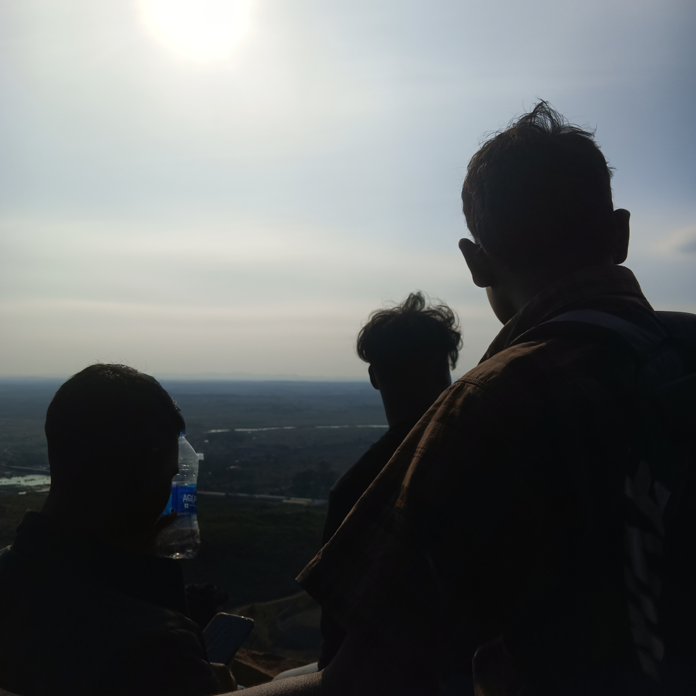
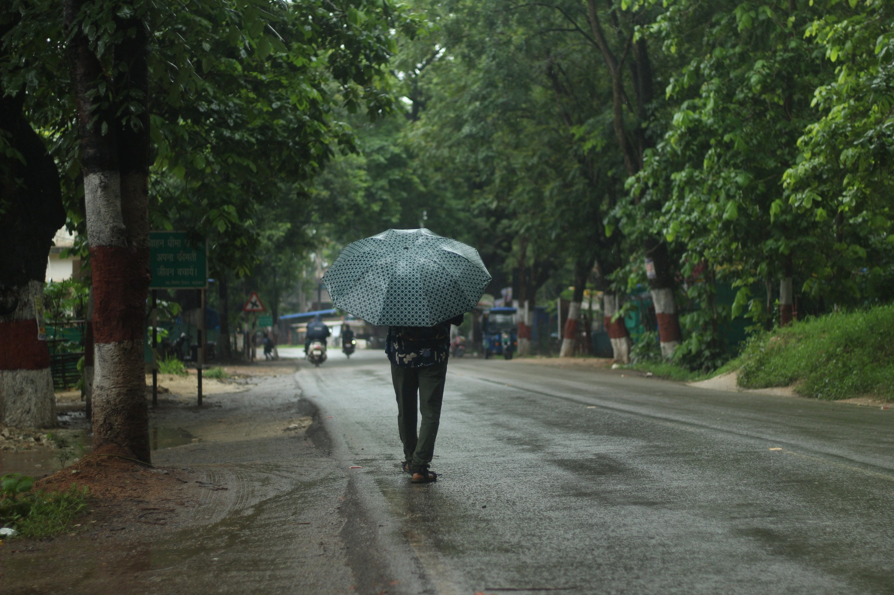
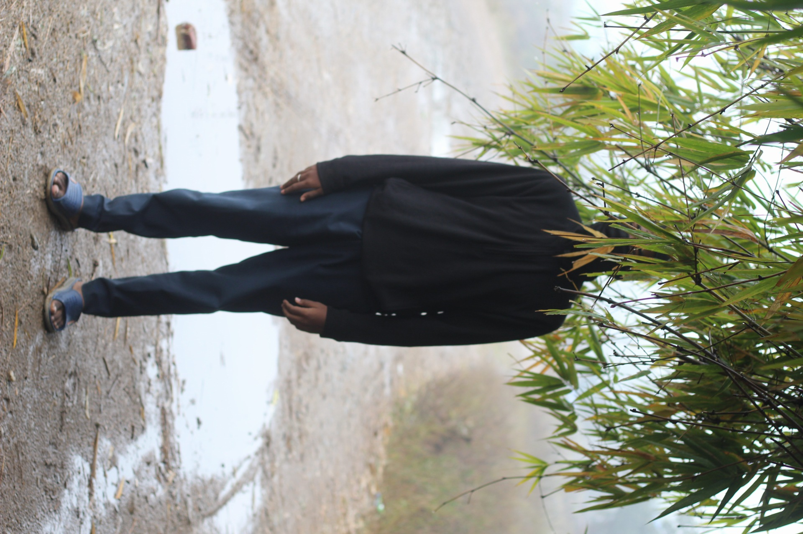
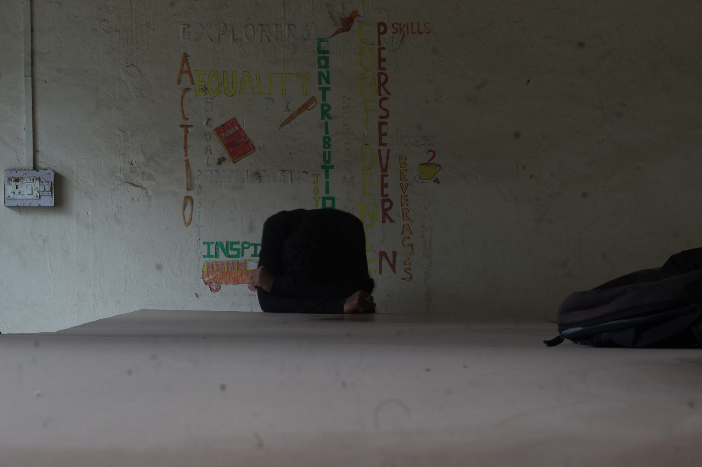
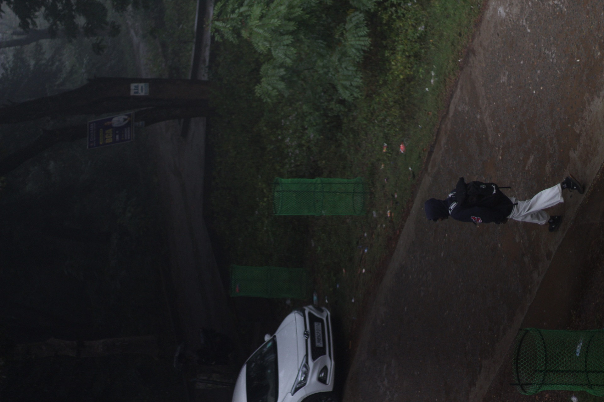
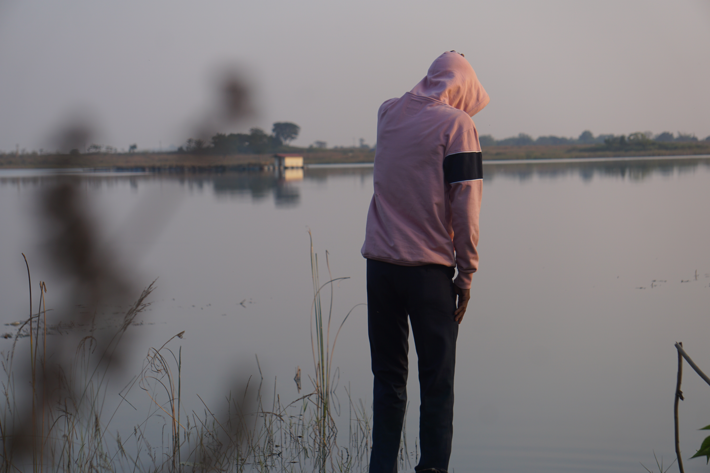

The wild calls, and he answers with bare spirit and unshaken will.
Thunderous waters crash around him,
yet he stands as if carved from the mountain itself.
In that moment, he is no longer man — he is legend, born of stone, storm, and sky

พวกเขายืนอยู่บนหน้าผาที่แผ่นดินพบกับท้องฟ้าไร้ขอบเขต
เงาสะท้อนจากดวงอาทิตย์ ดั่งทิวทัศน์โบราณ
ข้อตกลงกระซิบระหว่างทั้งสาม ภายใต้แสงสีทองที่ส่องประกาย
เพื่อพิชิตทัศนียภาพที่ยังมองไม่เห็น และสูดอากาศบริสุทธิ์

A lone figure faced the sprawl, where city lights ignite,
A phantom in the hazy dark, embraced by endless night.
Did dreams or burdens weigh him down, in that electric gleam?
A silent vigil held he there, lost in a concrete dream.

Through weeping skies and emerald boughs, a lone form makes its way,
Beneath the sheltering canopy, where raindrops softly play.
A solitary journey on, where glistening pathways wind,
Leaving footprints in the wet, a traveler defined.

Veiled by nature's verdant fringe, a figure stands concealed,
Where shadows dance and mysteries in the misty air are sealed.
A silent guardian of the wood, where secrets softly sleep,
Lost in the emerald embrace, where ancient spirits keep.

Hunched before a canvas bare, where inspiration's call,
Ignites the mind with vibrant hues upon the weathered wall.
A solitary seeker there, in thought's deep ocean vast,
Unleashing visions from within, that forevermore shall last.

On shadowed paths where darkness clings, a lone form journeys forth,
A backpack as a loyal friend, braving the fading north.
Past silent sentinels of green, and where the pale car gleams,
A quest unfolds in twilight's hush, within nocturnal dreams.

A solitary figure in a pink hoodie stands at the edge of a still lake,
facing away, lost in thought. The soft light and calm water create
a peaceful,
introspective mood.